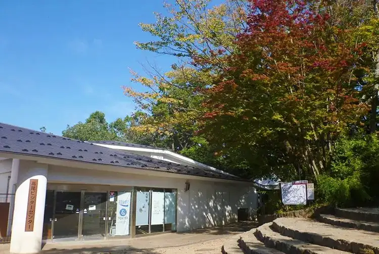
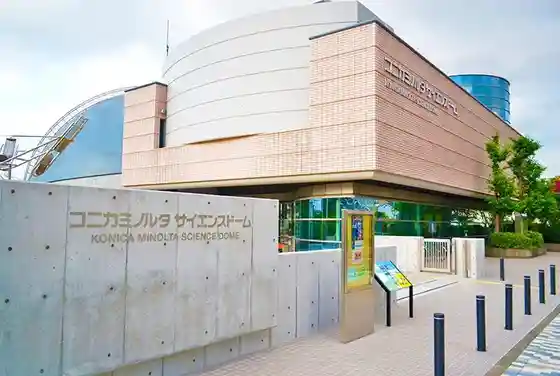
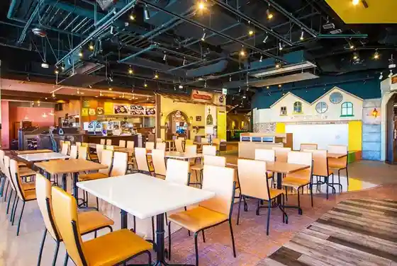
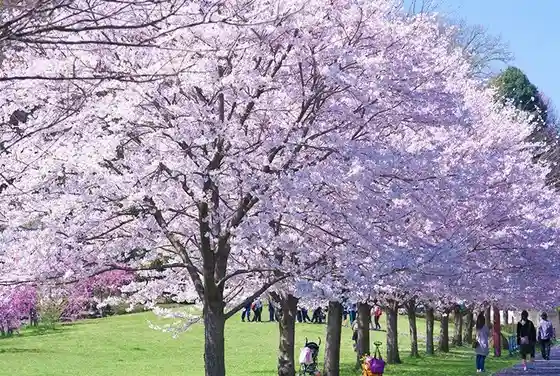

Hachioji, Tokyo: things to do, food and stays
Hachioji · Tokyo
Hachioji
Highlighted on the Tokyo map.

Sights
Takao Visitor Center
Konica Minolta Science Dome (Hachioji City Children's Science Museum)

Hino Oto Plaza
Minamiosawaeki Mae Dainingu Tokyo Miitorea

Katakura Castle Ruins Park

Mitsui Autoretto Park Tama Minamiosawa
Naganuma Park
Yamaimo Oin
Itcho Taira (Takaozan)
Mount Takao
Keio Takaozan Onsen / Gokuraku Yu
Tama Forest Science Garden
Dining
Tantan
タンタン

Noodle restaurant in Hachioji, Tokyo.
TAKUMA
麺笑 巧真

Noodle restaurant in Hachioji, Tokyo.
Niboshi Iwashi Ramen En Hachioji honten
煮干鰮らーめん 圓 八王子本店

Noodle restaurant in Hachioji, Tokyo.
Kamo Chuka Soba Kaede
鴨中華そば 楓

Noodle restaurant in Hachioji, Tokyo.
Ramen Jiro Hachioji yaen kaidou ten ２
ラーメン二郎 八王子野猿街道店 ２

Noodle restaurant in Hachioji, Tokyo.
Chuka Soba Goemon
中華そば 吾衛門

Noodle restaurant in Hachioji, Tokyo.
Boule Beurre Boulangerie
ぶーる・ぶーる・ぶらんじぇり

Sweets and bakery shop in Hachioji, Tokyo.
CICOUTE BAKERY
チクテベーカリー

Cafe in Hachioji, Tokyo.
Minmin Ramen Hon
みんみんラーメン 本店

Noodle restaurant in Hachioji, Tokyo.
Hachioji Ukai Tei
八王子うかい亭

Meat restaurant in Hachioji, Tokyo.
Soba Zabou
蕎麦 坐忘

Noodle restaurant in Hachioji, Tokyo.
Ukai Toriyama Reservation
うかい鳥山

Japanese restaurant in Hachioji, Tokyo.
Takao San Sumika
高尾山スミカ

Sweets and bakery shop in Hachioji, Tokyo.
Ramen Kaede
らーめん 楓

Noodle restaurant in Hachioji, Tokyo.
Ramen Jiro Mejirodai ten
ラーメン二郎 めじろ台店

Noodle restaurant in Hachioji, Tokyo.
Ramen Taian
らぁめん 大安

Noodle restaurant in Hachioji, Tokyo.
Isoya
讃岐うどん いそや

Noodle restaurant in Hachioji, Tokyo.
Tonkotsu Ramen Kaiou
豚骨ラーメン 開王

Noodle restaurant in Hachioji, Tokyo.
Chuka Soba Yasaka
中華そば 弥栄

Noodle restaurant in Hachioji, Tokyo.
Chuka Soba Enishi
中華そば えにし

Noodle restaurant in Hachioji, Tokyo.
Niboshi Chuka Soba Nibofuku
煮干し中華そば にぼ福

Noodle restaurant in Hachioji, Tokyo.
Da Luciano
ダ ルチアーノ

Cafe in Hachioji, Tokyo.
Miko
味幸

Noodle restaurant in Hachioji, Tokyo.
Ippatsu Ramen Hachioji honten
壱発ラーメン 八王子本店

Noodle restaurant in Hachioji, Tokyo.
Yatai Ramen Shunyacchan
屋台ラーメン しゅんやっちゃん

Noodle restaurant in Hachioji, Tokyo.
Ramen Senmon Aika
ラーメン専門 藍華

Noodle restaurant in Hachioji, Tokyo.
Dorayaki Makana
どら焼き まかな

Cafe in Hachioji, Tokyo.
Koraku
口樂

Noodle restaurant in Hachioji, Tokyo.
PAPPELBURG
パペルブルグ

Cafe in Hachioji, Tokyo.
Teuchi Soba Kurumaya
手打そば 車家

Noodle restaurant in Hachioji, Tokyo.
GARAKU Toukyou hachiouji ten
ガラク 東京八王子店

Japanese restaurant in Hachioji, Tokyo.
Ganso Binbintei Binbin Honten
元祖敏々亭 びんびん 本店

Noodle restaurant in Hachioji, Tokyo.
Tofuya Ukai Oowada ten
とうふ屋うかい 大和田店

Japanese restaurant in Hachioji, Tokyo.
Ramen Omata Ya
らーめん 尾又家

Noodle restaurant in Hachioji, Tokyo.
Tsuruya Seika
つるや製菓

Sweets and bakery shop in Hachioji, Tokyo.
Brasserie BASEL Keiou hachiouji ekimae ten Reservation
ブラッスリー・バーゼル 京王八王子駅前店

Cafe in Hachioji, Tokyo.
Stay
the b hachioji
the b 八王子

the b hachioji is a place to stay in Hachioji, Tokyo.
APA Hotel <Hachioji Ekikita>
アパホテル〈八王子駅北〉

APA Hotel <Hachioji Ekikita> is a hotel in Hachioji, Tokyo.